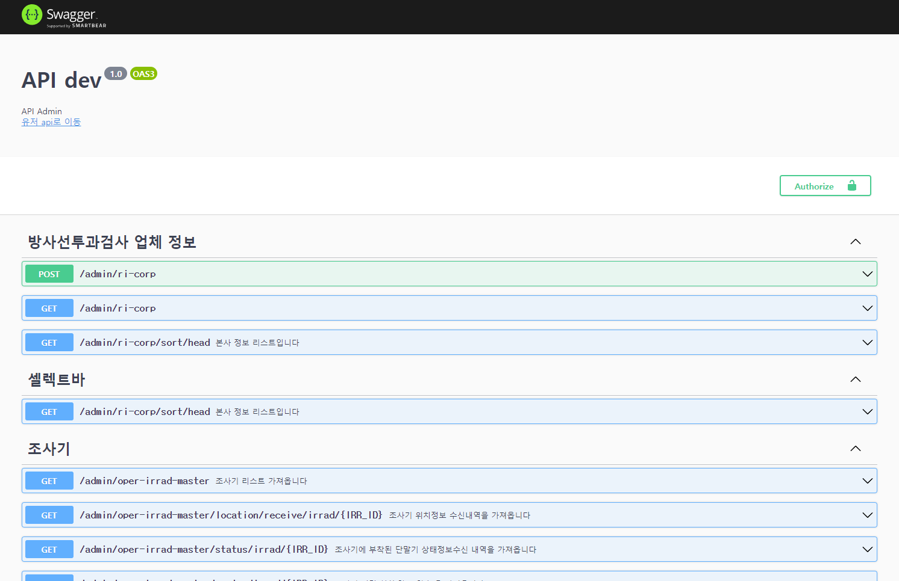
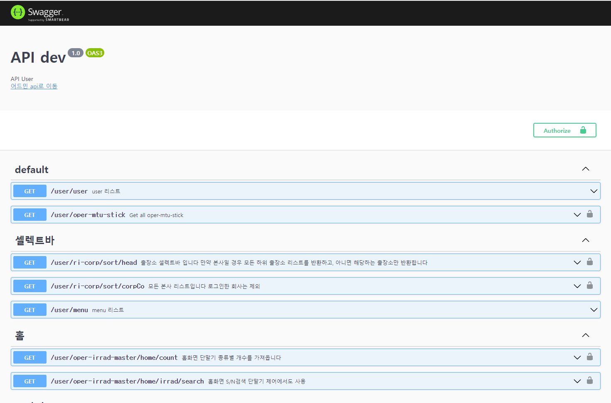
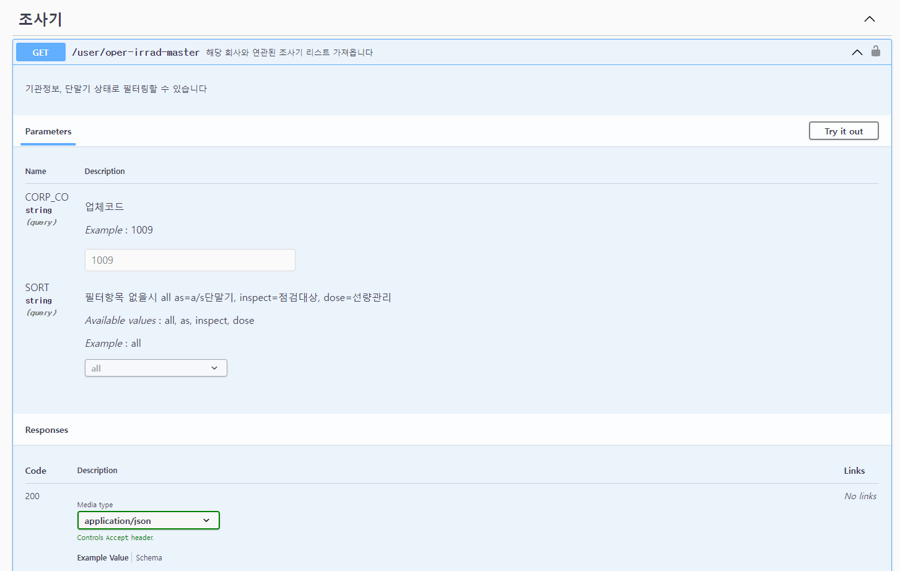
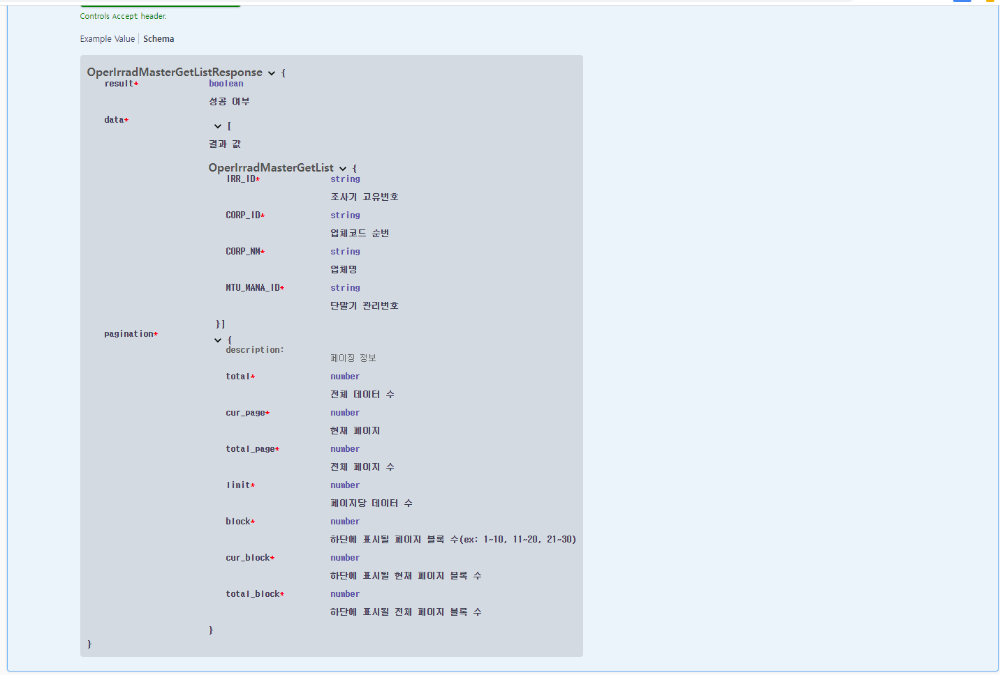
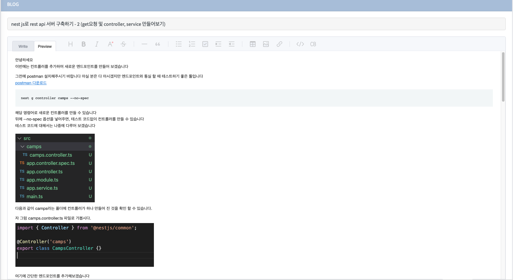

About Me
NodeJs, AWS 기반의 3년차 백엔드 개발자 입니다.
적게는 몇 천만원 프로젝트부터 많게는 억대 프로젝트(캠핑장, 스토어 플래폼) 등에 참여했습니다.
AWS의 EC2, S3, ECR 등 인프라 자원과 Docker를 이용하여 기본적인 서버 세팅, 데이터베이스 설계, API 작업 등에 익숙합니다.
mvp의 초기 모델을 시작으로 빠르게 비즈니스를 시작하는 분들에게 많은 도움을 드렸습니다.
여러 작업자와 커뮤니케이션 하는 것을 두려워하지 않고, 상대방을 존중하려 많은 노력을 합니다.
일을 정확하게 나누어 하고자 하는 마음보다, 내가 60%은 맡아서 한다는 마음으로 일에 임합니다.
새로운 프로젝트에 참여할 때마다 반복되는 업무가 비효율적이라 느끼고 어떻게 개션해야할지 고민하였습니다
aws 콘솔 접속하여 인프라를 구축, git-lab 세팅, 데이터베이스 설계, crud 코드를 생산하는 시간을 줄이기 위해
사내 관리자 페이지에서 클릭 한번으로 모든 것을 세팅할 수 있도록 돕는 기능을 개발하였습니다.
익숙하면 30분 ~ 1시간 정도 걸리는 작업을 5분으로 줄인 경험이 있습니다
2022년 목표는 협업을 위한 체계를 마련하는 것입니다.
팀 내의 코드리뷰문화, 테스트코드 작성 등을 제대로 활성화 하려합니다.
그에 따른 아키텍처 혹은 클린코드를 공부하고 있습니다.
Education
한국방송통신대학교 - 컴퓨터 과학
Experience
Nodejs 백엔드 개발
- 여러 프로젝트의 서버관리 및 백엔드 개발에 참여
- 관리자 프론트엔드 개발
프로젝트
학원관리앱
- 데이터베이스 설계, api 서버 구축 및 admin 웹 프론트 작업 작업
- 한글에서 제공하는 api를 이용하여, explorer 환경에서 웹으로 문제 답안 양식을 문제집에 맞게 동적으로 만드는 기능 작성
심리상담앱
- 데이터베이스 설계, api 서버 구축 및 admin 웹 프론트 작업
- 카카오톡 브라우저에서 ios 유니버셜 링크 기능이 제대로 작동하지 않는 것을 nginx proxy에서 mime type 수정 등을 통하여 해결
- Docker 컨테이너의 로그가 쌓여 서버가 죽는 일이 발생, 컨테이너 별로 로그파일 개수 및 파일당 입력되는 로그 사이즈 최적화
케이크앱
- 데이터베이스 설계, api 서버 구축
- chromium(Puppeteer)을 이용하여 인스타그램 이미지 크롤링 기능 구현
- chromium(Puppeteer) 이용하여 주문서 base64이미지 만드는 시간을 10초에서 1초로 단축
- firbase의 real time database를 이용하여 React 기반의 실시간 채팅 기능을 구현
- 알리고 등을 활용하여 문자 자동알림, 알림톡 등을 구현
온누리스토어 리뉴얼
- 관리자 페이지 웹 프론트 작업
- 온누리 측 시스템 매니저의 gitlab ci-cd 구현 부분을 참고하여 사내 ci-cd를 구축
- React로 된 프론트페이지 기능 구현 및 서포트
캠핑장 플래폼
- 데이터베이스 설계, api 서버 구축 및 admin 웹 프론트 작업
- gitlab ci-cd를 구축
- 사용자 세션 처리를 redis 환경으로 구축
- 결제, 커뮤니티, 예약, 정산 등의 기능 구축
라이브 홈쇼핑 웹
- 데이터베이스 설계, api 서버 구축 및 admin 웹 프론트 작업
- Socket.io 이용하여 채팅 구현을 firebase -> mysql로 전환
- WebRtc는 외부 api를 이용.
전기자동차 충전소 앱
- 데이터베이스 설계, api 서버 구축 및 admin 웹 프론트 작업
- ci-cd 환경을 개선 - 환경파일 및 변수 등을 s3에서 private하게 설정, docker build시 다운받아 컴파일 하는 식으로 보안 강화
- 공공데이터 포탈에서 제공하는 전기차충전소 위치 및 충전기 정보를 이용하여 분 단위로 실시간 예측 로직에 참여할 수 있도록 cron을 설계
방사능 관리 앱
- 웹서비스 -> 앱,웹 서비스 분리
- nestjs, typescript, typeorm 등을 이용하여 개발
- 팀원 들이 다른 프로젝트에서도 쓰일 수 있도록 기틀을 마련 - (공통코드, interceptor, cache 구현 등)
기타 프로젝트
- 관세사 중개플래폼 앱 - https://www.gtco9932.co.kr
- 헬스장 관리앱 등등
사내 활동
- express 기반의 사내 프레임워크를 버전관리 및 필요한 기능 들을 추가
- 관리자 페이지 구축, 필요한 기능 모듈화
- 모든 프로젝트의 gitlab ci-cd를 구축
- Sequelize를 이용하여, 양식에 맞는 엑셀파일 업로드시 자동으로 테이블 간 관계설정 및 테이블 생성하는 프로그램 구축
- ec2, s3생성 -> rds생성 -> gitlab repository, ci-cd 구축 -> route53 엔드포인트 설정 -> 기본적인 crud가 적용된 서버 생성 및 swagger로 확인 가능한 url 제공하는 원클릭 시스템 구축
- 사내 프레임 워크의 git-hook 및 테스트 코드 적용 및 작성
- 사내 express 프레임워크 -> nestjs 전환 작업 기여
아이스크림 홈런 초등교육페이지 리뉴얼
- 관리자 및 클라이언트 프론트 작업
- Spring 프레임워크 및 jquery,jsp 기반의 풀스택 작업
Skill
프로젝트에 사용했던 기술 들입니다.
Backend
- JavaScript, TypeScript
- NodeJs, Express, NestJs
- TypeOrm, Sequelize
- yarn, pm2
- eslint, Jest, Supertest, chai, Mocha
- Gitlab, Git
- Visual Studio Code
DevOps
- Mysql, MariaDB
- AWS EC2, RDS, S3, Route53, ECR
- Nginx
- Ubuntu
Frontend
- JavaScript
- Npm, Webpack
- React, Pug, Ejs
협업 툴
- figma, zeplin, slack, notion, dooray
WorkSpace
실무에서 작성중인 swagger입니다. admin, user를 각각 분리하여 개발환경에 맞게 rest api를 작성합니다. ( nestjs 환경에서 구동 )
admin api 예시
user api 예시
프론트 개발자가 헷갈리지 않도록 최대한 자세하게 작성합니다
문서 디테일 예시
문서 디테일 예시2
Activity
사내 활동입니다
제 사내 계정의 gitlab history입니다.
이 외에 관리자계정에도 제 history가 많이 있습니다
nest관련 글을 포스팅 하기도 했습니다
사내 직원들과 꾸준히 스터디중입니다
- 모던자바스크립트 입문 ( 클릭하여 특정 챕터를 발표한 내용을 확인할 수 있습니다 )
- Http 완벽가이드
- 열혈 C++ 프로그래밍
- 알고리즘 문제 해결 전략 등등..
More
제가 같이하고 싶은 기업은
-
대용량 트래픽 관리
- 다양한 프로젝트를 경험했지만, 트래픽이 몰리는 상황을 많이 겪지는 못했습니다. 트래픽이 몰리는 상황을 해결하는 능력을 기르고 싶습니다.
-
원만한 의사소통 창구
- 직급에 관계 없이 서로 무리 없이 충분한 의견을 나눌 수 있는 자리가 자주 마련되었으면 합니다.
-
엄격한 테스트 코드 환경
- 형식적인 테스트 코드를 작성에서 벗어나, 엄격한 테스트 코드 문화를 경험해보고 싶습니다.
-
주기적인 코드리뷰 문화
- 작성한 코드를 보며, 올바른 방향인가 항상 고민했던 시간이 많았습니다. 여러 사람들과 소통하여 코드 질을 높이고 싶습니다.